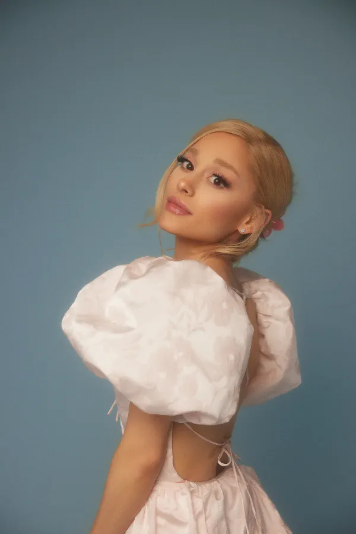

Welcome to my Ariana Grande fan website!!!
|

Ariana Grande
|
About ArianaAriana Grande was born June 26, 1993 in Boca Raton, Florida. She is a pop and R&B singer known for her powerful vocals, hit songs, and iconic style. She is one of my favorite musical artists and has inspired millions of fans around the world. As of 2025, Grande has broken 39 Guinness World Records. These include records for most songs to debut at number one on the Billboard Hot 100, most followers on Spotify (female), and most monthly listeners on Spotify (female). Fun Facts:1. She loves horror movies. 2. Her favorite color is lavender. 3. She is 5'1" tall. 4. Even though she's a world-famous singer, Ariana never made it into her school choir. |
Yours Truly (2013)
My Everything (2014)
Dangerous Woman (2016)
Sweetener (2018)
Thank U, Next
We Can't Be Friends
7 Rings
No Tears Left to Cry
Fan Count: 123456789
Last Updated: January 1999